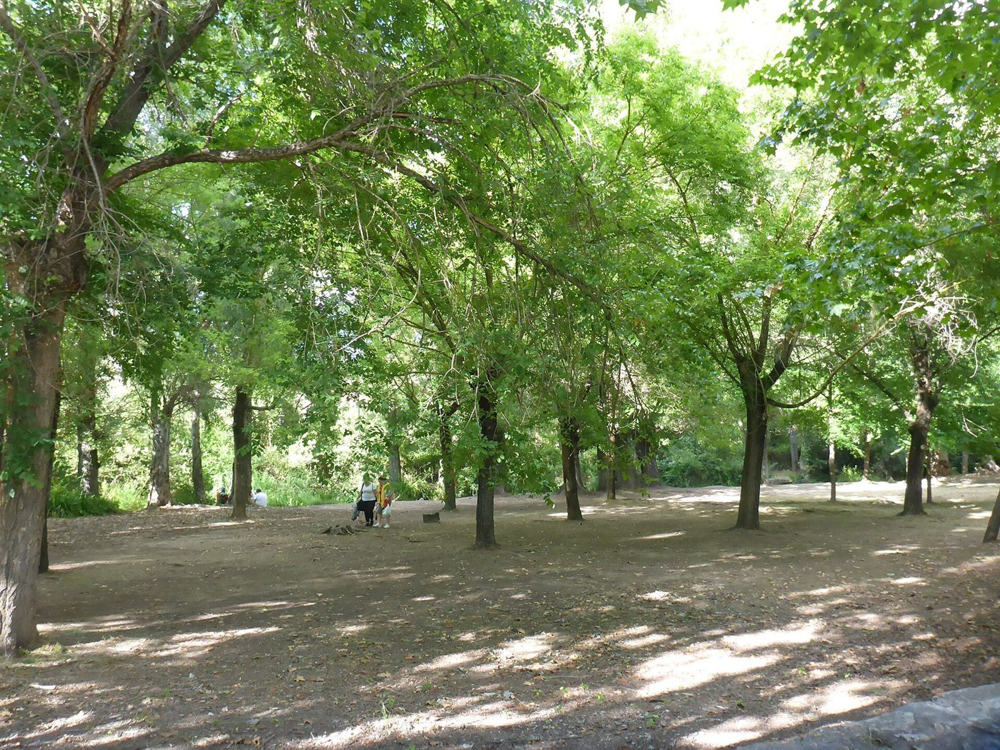

INMOBILIARIA EN EL BOSQUE · CÁDIZ
Hay lugares que
se sienten como casa.
Agencia Inmobiliaria El Bosque.
Tu consulta inmobiliaria empieza aquí.

TU BÚSQUEDA, EN PRIMER PLANO
El próximo paso
merece una conversación.
Consulta por teléfono los inmuebles disponibles y la información que necesitas para tu búsqueda.
¿Qué lugar tienes en mente?
Cuéntanos la zona, el tipo de vivienda y el presupuesto que estás valorando. Pregunta a la agencia por la oferta actual y sus condiciones.
Consultar disponibilidadNo hay un catálogo de inmuebles publicado en esta web. La disponibilidad se consulta directamente con la agencia.

AGENCIA INMOBILIARIA EL BOSQUE
Cerca de donde
quieres estar.
Una consulta sobre vivienda tiene mucho de personal: dónde, para qué y cómo quieres vivir. Contacta con la agencia en El Bosque para plantear tu caso.
Tu consulta, con contexto
- Lo que necesitas
- Explica tu interés inmobiliario y pregunta por los servicios disponibles para tu caso.
- Lo que quieres conocer
- Consulta condiciones, características y próximos pasos antes de decidir.
EL LUGAR TAMBIÉN IMPORTA
El Bosque.
La sierra, de cerca.
Arquitectura blanca, vegetación y el entorno del Majaceite. Una referencia local para poner en contexto tu búsqueda de vivienda en El Bosque, Cádiz.

HABLEMOS DE TU CONSULTA
Ponle voz
a tu próximo paso.
Contacta directamente con
Agencia Inmobiliaria El Bosque.
Confirma el punto de encuentro antes de venir: la dirección disponible no incluye número ni punto kilométrico.